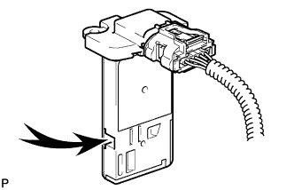

MASS AIR FLOW METER > ON-VEHICLE INSPECTION |
| 1. CHECK MASS AIR FLOW METER ASSEMBLY |
Check the mass air flow value.
Connect the intelligent tester to the DLC3.
Turn the engine switch on (IG).
Turn the intelligent tester on.
Enter the following menus: Powertrain / Engine / Data List / All Data / MAF.
|  |
Blow air into the mass air flow meter and check that the mass air flow value fluctuates.
 | Air |